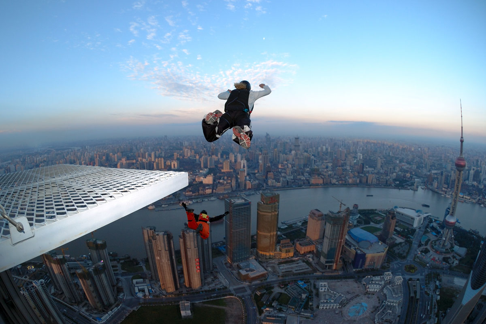
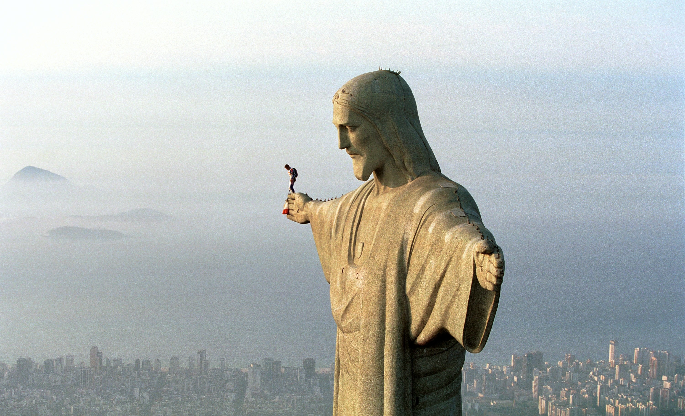

Base Jumping
Michael Williams
What is B.A.S.E.
BASE jumping, also sometimes written as B.A.S.E. jumping, is parachuting or wingsuit (video) flying from a fixed structure or cliff. "BASE" is an acronym that stands for four categories of fixed objects from which one can jump:
- Building
- Antenna
- Span
- Earth
Due to the lower altitudes of the jumps, BASE jumping is significantly more dangerous than skydiving from a plane. In the U.S., BASE jumping is currently regarded by many as a fringe extreme sport or stunt. In some jurisdictions or locations, BASE jumping is prohibited or illegal; in some places, however, it is permitted. BASE jumping became known to the wider public by depictions of BASE jumping in a number of action movies.
History
The acronym "B.A.S.E." (now more commonly "BASE") was coined by filmmaker Carl Boenish, his wife Jean Boenish, Phil Smith, and Phil Mayfield. Carl Boenish was the catalyst behind modern BASE jumping, and in 1978, he filmed the first BASE jumps to be made using ram-air parachutes and the freefall tracking technique (from El Capitan, in Yosemite National Park). While BASE jumps had been made prior to that time, the El Capitan activity was the effective birth of what is now called BASE jumping. BASE numbers are awarded to those who have made at least one jump from each of the four categories (buildings, antennas, spans and earth).
